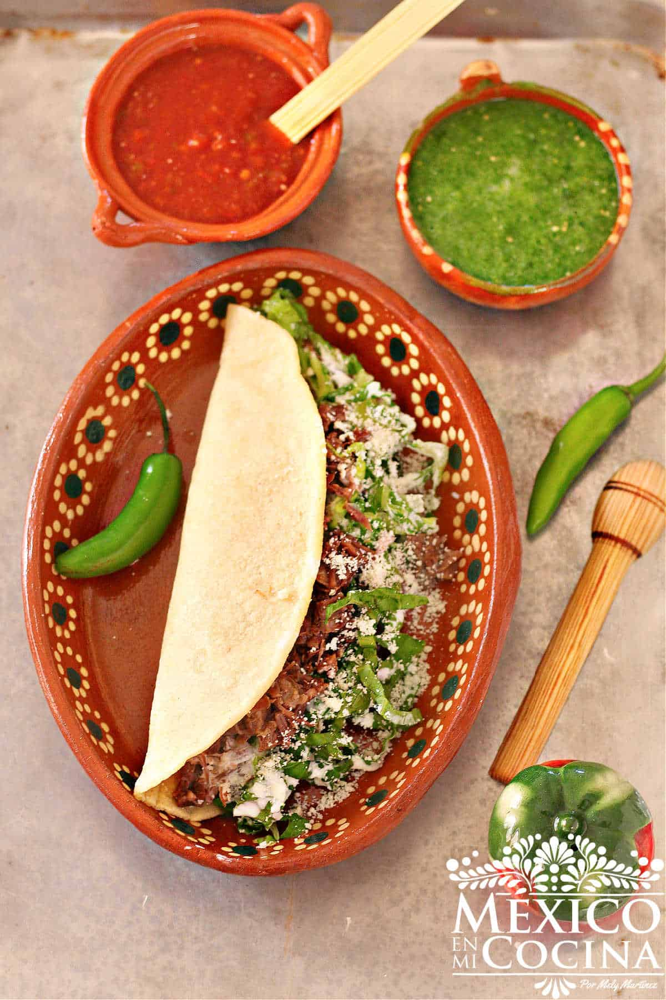

Quesadillas de deshebrada

Receta de quesadillas de deshebrada
Ingredientes
- Carne de res
- Cebolla blanca
- Dientes de ajo
- Hoja de laurel
- Sal al gusto
- Harina de maiz
- Agua
- Queso oaxaca
- Lechuga picada
- Queso
- Crema de mesa
Pasos
- Coloca la carne en una olla con 1/2 cebolla y 2 dientes de ajo. Añada la hoja de laurel y cubra
con dos tazas de agua. Cocina hasta que la carne este tierna y se pueda deshebrar fácilmente.
- Deshebra la carne una vez que se haya enfriado. Sazona con sal y reserva.
- Mezcla 1½ tazas de masa-harina con 1¼ tazas de agua para formar una masa suave (agrega más agua si es necesario). O si estas usando masa fresca amasa con una cucharada de agua. Divida la masa en 4 bolas grandes.
- Presiona cada bola de masa para formar un tronco, luego colócala entre 2 hojas de plástico y presione la masa con un plato de vidrio o molde de pastel. Esto formará una gran tortilla de forma ovalada
- Coloca la tortilla en una comal caliente, voltando la tortilla por cada lado dos veces. Una vez que la tortilla esté cocida, rellénala con 2 cucharadas de queso, 1 cuarto de taza de carne deshebrada, y cúbrala con la lechuga, la crema y el queso. Dobla la tortilla y dejala unos minutos en el comal a que se derrita bien el queso Oaxaca
Home